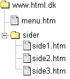
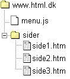

af Jonas Astrup, HTML.dk
Sidst opdateret 17. november 2000
Prøv at forestille dig at du har et website med f.eks. 200 sider. På alle 200 sider er der den samme menu. Prøv så at forestille dig at du på et tidspunkt ønsker at tilføje eller slette et punkt på menuen.
Ikke nogen behagelig tanke vel? Det er nemlig ikke særligt morsomt at skulle side manuelt og rette 200 sider. Derfor ville det være en stor fordel hvis man kun behøvede at lave ændringen et sted, hvorefter den automatisk slog igennem på alle siderne.
Det er netop hvad denne artikel handler om. At inkludere indholdet af en fil på mange sider samtidig.
Lad os sige at dit website er bygget op med en venstrestillet menu på alle sider, og det er denne menu vi ønsker at inkludere på alle siderne. For overskuelighedens skyld kan vi gengive sideopbygningen med en simpel tabel sådan her:
|
Velkommen til min side sidens tekst her - sidens tekst her - sidens tekst her - sidens tekst her - sidens tekst her |
Koden til ovennævnte tabel vil se nogenlunde sådan ud:
<table border="1"> <tr> <td> <ul> <li><a href="http://www.html.dk">Menupunkt 1</a></li> <li><a href="http://www.html.dk">Menupunkt 2</a></li> <li><a href="http://www.html.dk">Menupunkt 3</a></li> </ul> </td> <td> <p><strong>Velkommen til min side</strong></p> <p>sidens tekst her - sidens tekst her - sidens tekst her - sidens tekst her - sidens tekst her</p> </td> </tr> </table>
Fremhævet er selve koden som udgør menuen - det er altså den del af koden, som skal inkluderes på alle siderne.
Der er i udgangspunktet to måder man kan inkludere koderne på: serverside eller clientside.
Som du nok kan regne ud gælder det om at benytte SSI hvis dit webhotel understøtter det. Begge metoder vil dog blive gennemgået nedenfor.
Ovenfor fandt vi koden som udgør menuen, der skal inkluderes på alle sider. Lav nu en fil med følgende indhold:
<ul> <li><a href="http://www.html.dk">Menupunkt 1</a></li> <li><a href="http://www.html.dk">Menupunkt 2</a></li> <li><a href="http://www.html.dk">Menupunkt 3</a></li> </ul>
Filen gemmes nu som en html-fil, du kan jo kalde den for menu.htm
Hvis vi antager at filen menu.htm ligger i roden af dit website, og at du har nogle sider i en mappe, som hedder "sider" kunne vi jo illustrere strukturen af sitet på denne måde:

Hele ideen er så at inkludere filen menu.htm på det rigtige sted i f.eks. side1.htm - lad os kigge på hvordan koden i side1.htm skal se ud:
<table border="1"> <tr> <td> <!-- #include virtual="/menu.htm"--> </td> <td> <p><strong>Velkommen til min side1</strong></p> <p>tekst på side1 - tekst på side1 - tekst på side1 - tekst på side1</p> </td> </tr> </table>
Dette betyder at når bruger ser filen menu1.htm vil han se følgende:
|
Velkommen til side1 tekst på side1 - tekst på side1 - tekst på side1 - tekst på side1 |
Fik du den? Ellers lad os kigge lidt på hvad det var der skete.
Ved at indsætte følgende linie i koden...
<!-- #include virtual="/menu.htm"-->
... tog vi simpelthen indholdet af filen menu.htm og inkluderede den i side1.htm - smart ikke? og det bedste af det hele er at du nu kan tilføje nøjagtig den samme linie i alle dine andre filer på sitet. Og dermed har vi netop opnået det som var meningen: nemlig at rettelser i filen menu.htm automatisk ændrer alle sider på dit site.
Ovenstående metode fungerer på alle webhoteller, som understøtter SSI (Server Side Includes). Afhængigt af hvordan serveren er sat op, er det muligt at du skal omdøbe dine filer til .asp eller .shtml for at få filen inkluderet.
Hvis dit webhotel ikke understøtter SSI kan du læse videre om hvordan du opnår den samme effekt med javascript.
Hvis vi tager udgangspunkt i den samme situation som ovenfor, hvor det var følgende HTML kode, som skulle inkluderes:
<ul> <li><a href="http://www.html.dk">Menupunkt 1</a></li> <li><a href="http://www.html.dk">Menupunkt 2</a></li> <li><a href="http://www.html.dk">Menupunkt 3</a></li> </ul>
Gælder det nu om at kode et lille stykke javascript, som genererer den samme kode, det kunne f.eks. se sådan ud:
<!-- dette indsættes for at skjule koden for gamle browsere
document.write("<ul>")
document.write("<li><a href='http://www.html.dk'>Menupunkt 1</a></li>")
document.write("<li><a href='http://www.html.dk'>Menupunkt 2</a></li>")
document.write("<li><a href='http://www.html.dk'>Menupunkt 3</a></li>")
document.write("</ul>")
// slut skjul kode -->
Denne stump kode gemmer du nu i en javascript-fil - lad os for nemheds skyld kalde den for menu.js og placere den i roden af vores website - dette skulle gerne se nogenlunde sådan ud:

Nu skal vi blot kalde og afvikle koden i menu.js på det rigtige sted i f.eks. side1.htm - lad os kigge på hvordan koden i side1.htm så skal se ud:
<table border="1"> <tr> <td> <script type="text/javascript" src="/menu.js"></script> </td> <td> <p><strong>Velkommen til min side1</strong></p> <p>tekst på side1 - tekst på side1 - tekst på side1 - tekst på side1</p> </td> </tr> </table>
Hvis brugerens browser ellers har slået javascript til vil resultatet blive:
|
Velkommen til side1 tekst på side1 - tekst på side1 - tekst på side1 - tekst på side1 |
Det var jo ganske som ønsket - og alle rettelser i menuen skal nu kun foretages i filen menu.js for at slå igennem på alle sider.
...Men jeg hører allerede dit spørgsmål: Hvad hvis brugerens browser ikke understøtter javascript, eller hvis det er en søgerobot som "ser" siden?
Svaret på det spørgsmål er at de ikke kan se menuen, hvilket vil give nogenlunde dette resultat:
|
Velkommen til side1 tekst på side1 - tekst på side1 - tekst på side1 - tekst på side1 |
Det er selvfølgelig ikke acceptabelt. For at løse problemet kan du ved hjælp af elementet <noscript> angive hvilken HTML kode browseren skal vise hvis javascript ikke understøttes.
Det kunne jo således være en mulighed at henvise alle brugere uden javascript til et sitemap, som indeholder links til de forskellige områder på sitet. Det kunne vi f.eks. gøre på denne måde:
<table border="1"> <tr> <td> <script type="text/javascript" src="/menu.js"></script> <noscript> <p>Denne menu kræver at du har slået javascript til i din browser. Slå javascript til, eller brug vores <a href="sitemap.htm">sitemap</a></p> </noscript> </td> <td> <p><strong>Velkommen til min side1</strong></p> <p>tekst på side1 - tekst på side1 - tekst på side1 - tekst på side1</p> </td> </tr> </table>
Dette vil give følgende resultat i en browser, som ikke afvikler javascript:
| Denne menu kræver at du har slået javascript til i din browser. Slå javascript til, eller brug vores sitemap |
Velkommen til side1 tekst på side1 - tekst på side1 - tekst på side1 - tekst på side1 |
Vi har i denne artikel set på hvordan SSI og javascript kan bruges til at gøre livet lettere for en webmaster i forbindelse med en vedligeholdelsen af en menu.
De samme metoder kunne bruges til at inkludere f.eks. en kontaktadresse nederst på alle sider, eller måske en nyhedsbox som skal opdateres jævnligt. Mulighederne er mange - held og lykke med at inkludere.